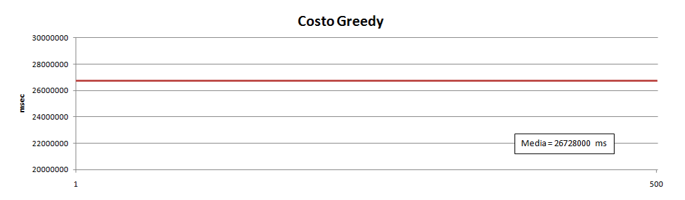
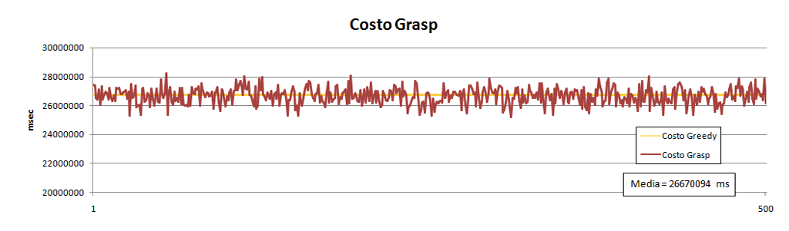
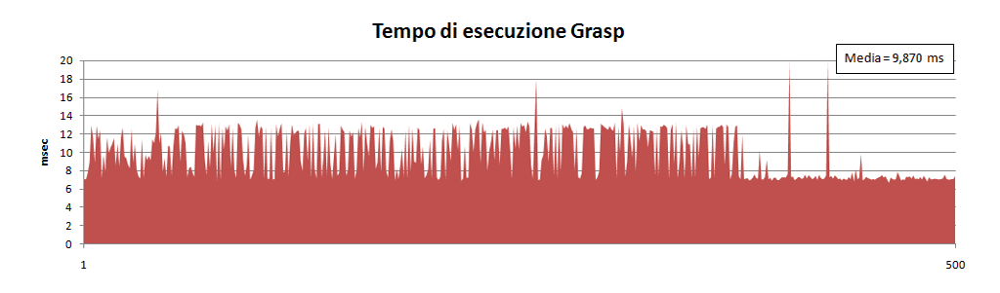
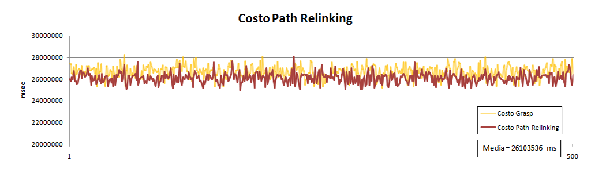
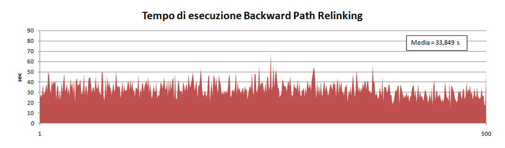
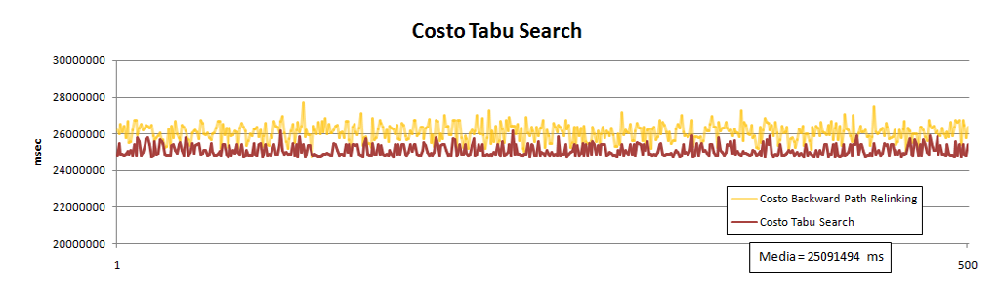
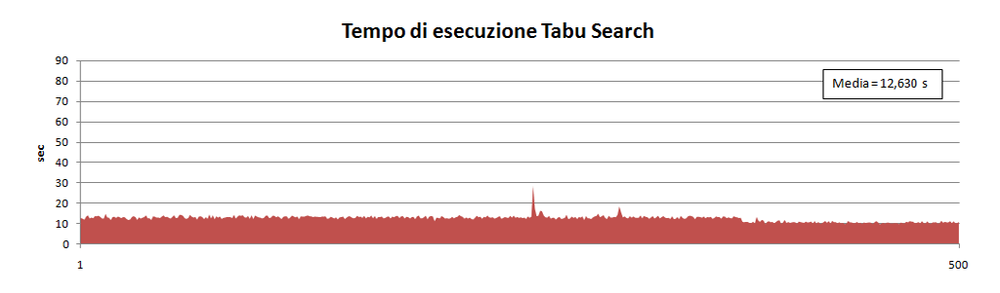

Sono note le origini degli spostamenti casa-lavoro degli studenti del polo. |
Il decreto interministeriale Mobilità Sostenibile nelle Aree Urbane del 27/03/1998, ha introdotto la figura professionale del Mobility Manager di azienda. Attualmente sono presenti soltanto soluzioni proprietarie sviluppate da enti e aziende di grosse dimensioni (e.g. Software DREAMS del Politecnico di Milano), per tale motivo si propone un'implementazione innovativa e open source. |
Db People |
Place & Time |
Http Request |
Maps Views |
Maps Api |
Some Magic |
Benchmark |
Json Response |
Si vuole soddisfare le richieste di un insieme di utenti, ognuno dei quali desidera spostarsi fra due punti di una rete, arrivando tutti ad un’ora prestabilita. Si tratta quindi di determinare un insieme ottimo di percorsi su grafo, nel rispetto dei vincoli dati, in modo da minimizzare la durata totale delle singole auto. (Problema di Ottimizzazione) Ogni utente ha un insieme di Dati personali: numero identificativo, nome, indirizzo, massimo tempo di viaggio consentito e preferenze di compagni di viaggio. L'ammissibilità delle possibili soluzioni è data da un insieme di Vincoli: la capacità massima di ciascuna macchina, la possibilità di inserire un tempo limite di viaggio, e la preferenza negli abbinamenti dei compagni di viaggio. |
|
|
Per ogni utente selezionato viene creato un Nodo che contiene tutte le informazioni necessarie. Queste formano i punti di ancoraggio sulla mappa. | |
| |
|
|
Per ogni coppia di nodi vengono creati due archi con costo differente in base al verso di percorrenza. La struttura Arco contiene tutte le informazioni necessarie. | |
Il problema è quindi formalizzato a partire da un grafo completo, fortemente connesso, orientato, con costi differenti su ogni arco in base al verso di percorrenza. Dai dati inseriti, tramite determinati metodi costruttivi, è possibile ottenere una Soluzione del problema che rispetti i vincoli di ammissibilità. |
Il problema studiato si dice di classe NP poichè il problema di certificato associato (anche detto test di ammissibilità) è risolvibile in tempo polinomiale. Per poter affrontare le istanze reali di un problema NP-Hard si deve necessariamente ricorrere ad approcci di tipo euristico accontentandosi di trovare delle ‘buone’ soluzioni amissibili. Questo perchè metodi esaustivi divengono inutilizzabili non appena il numero dei dati in ingresso aumenta oltre un certo limite. |
|
Come primo approccio si sceglie un'euristica di tipo Greedy poichè di facile implementazione e notevole efficienza computazionale. |
Si inizia scegliendo il nodo più lontano dal nodo destinazione: questo verrà inserito come primo elemento di un nuovo vettore macchina (diventando un nodo autista). |
|
|
|  |
L’euristica Greedy non garantisce l’ottimalità della soluzione perchè compie decisioni parziali "localmente ottime" senza mai modificarle. |
Si utilizza lo stesso algoritmo creato per la Greedy, ma la procedura Best cambia perchè ad ogni passo viene scelto un nodo random tra un sottoinsieme di k nodi "migliori" (nel nostro caso k=3, con k=1 si avrebbe la Greedy standard). |
|
|
|   |
I limiti della GRASP sono rappresentati principalmente dal fatto che non possiede memoria (ogni restart è quindi indipendente dai precedenti) e che non dà nessuna garanzia sulla qualità della soluzione iniziale. |
Si costruisce una popolazione di soluzioni elite { si } ripetendo la GRASP più volte e aggiungendo la Greedy trovata precedentemente. |
|
|  |
Secondo alcuni studi è più conveniente procedere in senso inverso, quindi dalla soluzione target s*, ad ogni mossa, si cerca di raggiungere la soluzione elite si. |
|  |
Confrontando le due euristiche si è notato che, sebbene il costo delle soluzioni sia identico, il tempo di esecuzione della Path Relinking è leggermente migliore nel 54,53% dei casi. |
Una limitazione che rimane anche nella Path Relinking riguarda il fatto di non avere memoria, per questo si rischia di ritornare in soluzioni già visitate. |
Si parte da una soluzione generica e si valutano tutte le possibili soluzioni a distanza di una mossa: Swap, Stack o Unstack. Si seleziona poi la soluzione migliore dell’intorno valutato (si accettano anche peggioramenti in modo da sfuggire agli ottimi locali) e si mantiene memoria della soluzione migliore visitata. Nel caso in cui la soluzione non sia ammissibile allora verrà aggiunta una penalty al costo. |
|
|   |
E' possibile confrontare i tempi di esecuzione dell'algoritmo utilizzato in funzione di valori di input (numero di nodi da valutare) differenti. Sono presenti alcune limitazioni a questo studio a causa dell'accesso free alle API di Google Maps; non si è potuto superare il valore di 46 nodi e si è dovuto tenere conto del tempo necessario tra una richiesta e l'altra. |
Visualizza tutti i Dati. |
A conclusione dello studio effetuato si può osservare che tramite la Tabu Search si riesce ad ottenere un buon risultato al problema NP-Hard del Car Pooling con un input di dimensione non ridotta. La soluzione finale risulta inoltre non solo molto buona ma anche applicabile a contesti reali. |
Federica Pelli, Giulio Riberto, Tommaso Berlose |